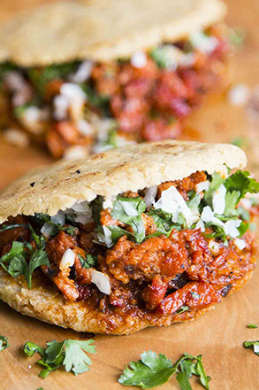

gorditas

🥙Make gorditas at home with this easy masa dough. These little corn cakes puff up when fried and form a pocket for stuffing with cheese, beans, or just about anything!🥙
🥙A gorgita (which means “little fat one” in Spanish) is a deep-fried pocket of masa dough that's filled with savory ingredients, such as cheese and meat.🥙
Ingredients
- masa harina
- Salt
- flour
- baking powder
- shortening
- canola oil
Steps
- Stir masa harina, water, and salt together in a large bowl until combined.
- Whisk flour and baking powder together in a small bowl until combined.
- Gradually stir flour mixture and shortening into masa harina mixture, using clean hands when mixture is cool enough to touch. If dough seems dry, add more hot water, 1 to 3 teaspoons at a time, until dough is somewhat clay-like in texture, evenly moistened, and tacky but not sticky.
- Evenly divide and roll dough into 6 balls (about 2 ½ inches or 2 ¾ ounces each); keep covered with plastic wrap while working.
- Line a work surface with waxed paper or plastic wrap; sprinkle lightly with water. Working with one ball at a time, flatten balls on the wet surface into a 5 ½-inch disc (about until about 1⁄8-inch thick). Transfer discs to a waxed paper- or plastic wrap-lined baking sheet; keep covered with plastic wrap while working with remaining dough.
- Heat a griddle or comal over medium heat. Working in batches if needed, cook gorditas until dry to the touch with some small, very lightly golden spots, about 2 to 3 minutes per side. Place gorditas in a single layer, uncovered, on large plates or a large baking sheet.
- Heat oil in a large, heavy skillet over medium to medium-high heat until hot enough to bubble immediately when edge of gordita is dipped in. Fry gorditas, one by one, until puffed, gently pressing it down into the oil occasionally with a spatula, about 45 seconds per side.
- Drain briefly on paper towels, then cut crosswise to create an opening large enough to stuff gorditas full of your favorite foods. Enjoy!